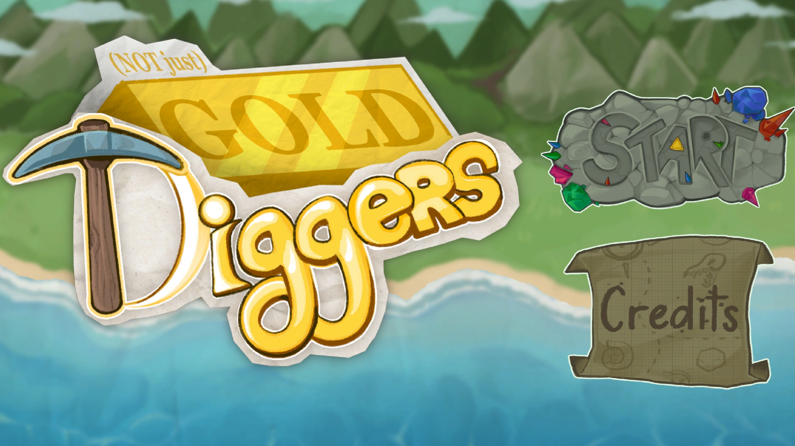
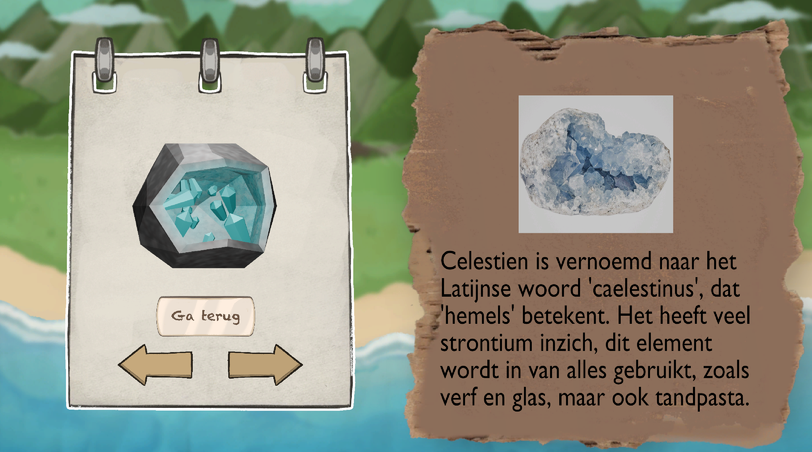
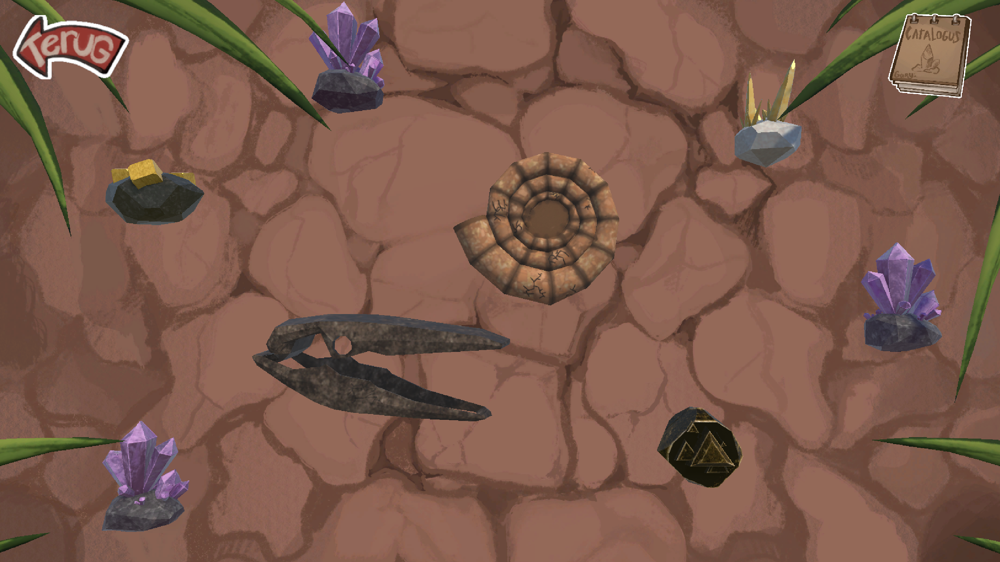

Save Christmas
-Red kerst door sterren te verzamelen-

Tijdens de kerstvakantie wilde ik een klein project maken in een engine waar ik nog niet eerder mee had gewerkt. Daarom heb ik een korte game ontwikkeld in Godot waarin de speler Kerstmis moet redden door sterren te verzamelen die verspreid liggen door het level.
Met dit project wilde ik vooral ervaring opdoen met een nieuwe engine en GDScript.Tijdens de ontwikkeling heb ik gewerkt met verschillende gameplay-mechanics, zoals player movement, interactie met objecten en het opzetten van een duidelijke game loop. Het project gaf me de kans om snel vertrouwd te raken met de workflow van Godot en te experimenteren met GDScript binnen een klein maar volledig speelbaar spel.
Met dit project wilde ik vooral ervaring opdoen met een nieuwe engine en GDScript.Tijdens de ontwikkeling heb ik gewerkt met verschillende gameplay-mechanics, zoals player movement, interactie met objecten en het opzetten van een duidelijke game loop. Het project gaf me de kans om snel vertrouwd te raken met de workflow van Godot en te experimenteren met GDScript binnen een klein maar volledig speelbaar spel.
Details
Uitgekomen: Januari 2026
Engine: Godot
Taal: GDScript
Teamgrootte: 2
Rol: Gameplay Developer
Tijd: 1 week
Mijn bijdrage
Gameplay Mechanics
- Enemy movement en aanvalsgedrag geïmplementeerd
- Player attack mechanic ontwikkeld
Progression System
- Level progression systeem gebouwd (volgend level wanneer alle enemies verslagen of sterren verzameld zijn)
Collectibles
- Sterren-verzamel systeem gemaakt
Feedback
- Tekst pop-ups toegevoegd voor in-game feedback
- Animaties geïmplementeerd voor vijanden en Santa
func _physics_process(delta: float) -> void:
# update healthbar based on hp
progressBar.value = CurrentHealth
timer += delta
# fsm for wandering, attacking and death
match state:
State.Wandering:
current_pos = position.x
position.x += movement * delta
_wandering()
State.Attacking:
_attacking()
State.Dead:
if star != null:
star.process_mode = Node.PROCESS_MODE_INHERIT
star.visible = true
queue_free()
# check if player entered aura to start attacking
func _on_area_2d_body_entered(body: Node2D) -> void:
if body.name == "CharacterBody2D":
state = State.Attacking
in_area = true
# check if player exited aura to stop attacking
func _on_area_2d_body_exited(body: Node2D) -> void:
state = State.Wandering
in_area = false
# function for wandering
func _wandering() -> void:
if CurrentHealth <= 0:
state = State.Dead
anim_slime.play("default")
# update movement direction
if moving_left:
movement = -10
elif moving_right:
movement = 10
# change direction at bounds
if current_pos <= loc2:
moving_right = true
moving_left = false
scale = Vector2(-1, 1)
elif current_pos >= loc1:
moving_right = false
moving_left = true
scale = Vector2(1, 1)
# function for attacking
func _attacking() -> void:
if CurrentHealth <= 0:
state = State.Dead
# player attacking slime
if Player.attacked:
CurrentHealth -= 34
Player.attacked = false
# slime attacking player
if Player.attack_playing == false:
anim_slime.play("attack")
if timer > 1:
attack_sound.play()
timer = 0
Player._take_damage(5)


